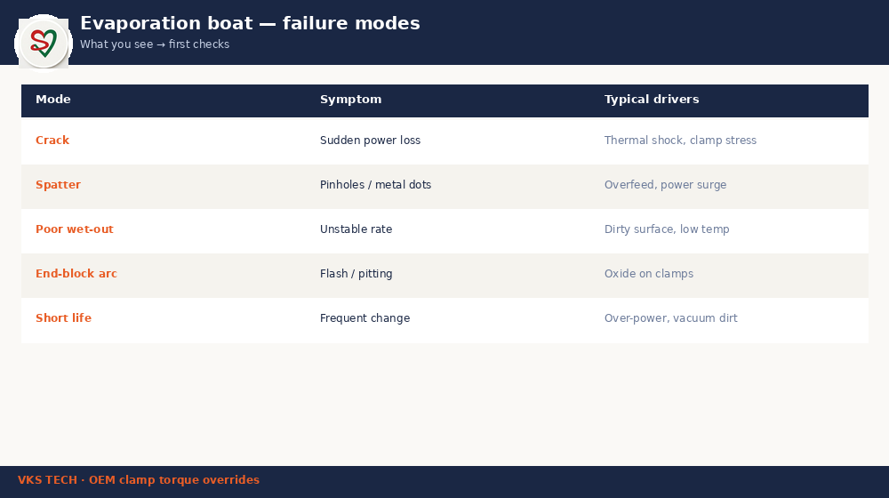

⛵ Evaporation Boats — Selection, Install Discipline & Failure Modes
📖 12-min read · Metalliser consumables · Shop-floor diagnostic
Most boat-life blogs talk only about hours. This one is different. It is about selection, install, and named failure modes — the three things that decide whether your next set lasts a full shift or dies in three hours. (For the ₹/month life-extension math, see the dedicated boat-life optimisation post.)
- Match boat to wire + power recipe — wrong pair kills life early
- Clamp contact is a failure mode — not only “ceramic quality”
- Photograph failed boats — patterns beat memory
- Zero-capex wins: torque, clean contacts, even cooling, aligned feed

1. Selection — not every boat fits every recipe
TiB₂-BN boats differ in geometry, resistance, and thermal mass. A boat that works on OD 2.0 PET at moderate speed can overheat on a high-OD or high-speed recipe if current density is wrong. Before blaming “cheap boats,” confirm:
- Supplier tier and batch ID logged against the machine
- Boat length / cavity matches your source geometry
- Wire diameter and feed rate are inside the boat’s design window
- Power ramp profile is the same one used during qualification
2. Install discipline — where most plants leak life
Copper clamps: Loose or oxidised contacts create a hot spot at the tab. Symptom: burn marks on one end only. Fix every changeover: torque to SOP, Scotch-Brite clean contact faces (per plant SOP such as VKS-MET-SOP-08 style discipline).
Cooling uniformity: If one source position runs warmer between cycles, that boat starts the next heat from a higher base temperature and fails early. Weekly temperature-probe checks across positions catch this before scrap piles up.
Wire to cavity centre: 5 mm offset is enough for uneven wet-out and local erosion.
3. Five failure modes — train operators to name them
| Mode | What you see | First checks |
|---|---|---|
| Thermal shock crack | Clean break early in life | Warmup ramp too fast |
| Uneven wet-out | Pool on one side, dry erosion other side | Wire alignment, cavity dirt |
| Chemical erosion | Pitting, grey/black surface | Wire purity, residual O₂ / vacuum |
| Clamp contact fail | Burn / arc at tab ends | Torque, oxide on copper |
| Local feed damage | One zone eroded, rest healthy | Feeder spout, kink, tension |
4. Photo log — your best free diagnostic
For 30 days: every removed boat on a clean white surface, phone photo, folder by date + machine + position. Side-by-side review exposes “position 5 always cracks left” patterns no spreadsheet shows.
⛵ इवैपोरेशन बोट — चयन, इंस्टॉल डिसिप्लिन और फेल्योर मोड
📖 12 मिनट · मेटलाइज़र कंज़्यूमेबल · शॉप-फ्लोर डायग्नोस्टिक
ज़्यादातर बोट-लाइफ ब्लॉग सिर्फ घंटों की बात करते हैं। यह अलग है। फोकस है चयन, इंस्टॉल, और नाम वाले फेल्योर मोड — तीन चीज़ें जो तय करती हैं कि अगला सेट पूरा शिफ्ट चलेगा या तीन घंटे में खत्म। (₹/महीना लाइफ-एक्सटेंशन मैथ के लिए अलग बोट-लाइफ ऑप्टिमाइज़ेशन पोस्ट देखें।)
- बोट को वायर + पावर रेसिपी से मैच करें — गलत जोड़ी लाइफ जल्दी खत्म करती है
- क्लैंप कॉन्टैक्ट भी फेल्योर मोड है — सिर्फ “सिरेमिक क्वालिटी” नहीं
- फेल बोट की फोटो लें — पैटर्न याददाश्त से बेहतर
- ज़ीरो-कैपेक्स जीत: टॉर्क, साफ कॉन्टैक्ट, समान कूलिंग, अलाइन्ड फीड
1. चयन — हर बोट हर रेसिपी के लिए नहीं
TiB₂-BN बोट ज्यामिति, रेज़िस्टेंस और थर्मल मास में अलग होते हैं। मध्यम स्पीड पर OD 2.0 PET पर चलने वाला बोट हाई-OD या हाई-स्पीड रेसिपी पर ओवरहीट हो सकता है अगर करंट डेंसिटी गलत हो। “सस्ती बोट” दोष देने से पहले कन्फर्म करें:
- सप्लायर टियर और बैच ID मशीन के साथ लॉग
- बोट लंबाई / कैविटी सोर्स ज्यामिति से मैच
- वायर व्यास और फीड दर बोट की डिज़ाइन विंडो में
- पावर रैम्प वही जो क्वालिफिकेशन में था
2. इंस्टॉल डिसिप्लिन — जहाँ ज़्यादातर प्लांट लाइफ गवाते हैं
कॉपर क्लैंप: ढीले या ऑक्सिडाइज़्ड कॉन्टैक्ट टैब पर हॉट स्पॉट बनाते हैं। लक्षण: सिर्फ एक सिरे पर बर्न मार्क। हर चेंजओवर पर: SOP के अनुसार टॉर्क, कॉन्टैक्ट फेस Scotch-Brite से साफ।
कूलिंग एकरूपता: अगर एक सोर्स पोज़िशन चक्रों के बीच गर्म रहती है, वह बोट अगली हीट ऊँचे बेस टेम्परेचर से शुरू करता है और जल्दी फेल होता है। साप्ताहिक टेम्परेचर-प्रोब चेक इसे स्क्रैप से पहले पकड़ते हैं।
वायर कैविटी सेंटर पर: 5 mm ऑफसेट भी अनइवन वेट-आउट और लोकल इरोज़न के लिए काफी है।
3. पाँच फेल्योर मोड — ऑपरेटर को नाम सिखाएँ
| मोड | क्या दिखता है | पहले चेक |
|---|---|---|
| थर्मल शॉक क्रैक | शुरुआती लाइफ में साफ टूटन | वार्मअप रैम्प बहुत तेज़ |
| अनइवन वेट-आउट | एक तरफ पूल, दूसरी तरफ ड्राई इरोज़न | वायर अलाइनमेंट, कैविटी गंदगी |
| केमिकल इरोज़न | पिटिंग, धूसर/काली सतह | वायर प्यूरिटी, रेसिडुअल O₂ / वैक्यूम |
| क्लैंप कॉन्टैक्ट फेल | टैब सिरों पर बर्न / आर्क | टॉर्क, कॉपर पर ऑक्साइड |
| लोकल फीड डैमेज | एक ज़ोन इरोडेड, बाकी स्वस्थ | फीडर स्पाउट, किंक, टेंशन |
4. फोटो लॉग — सबसे अच्छा मुफ्त डायग्नोस्टिक
30 दिन: हर निकाली गई बोट साफ सफेद सतह पर, फोन फोटो, फोल्डर तारीख + मशीन + पोज़िशन से। साथ-साथ देखने पर “पोज़िशन 5 हमेशा बाएँ क्रैक” जैसे पैटर्न दिखते हैं जो स्प्रेडशीट नहीं दिखाती।